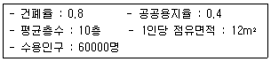
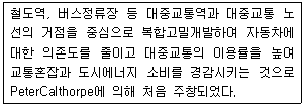
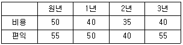
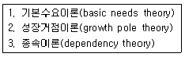
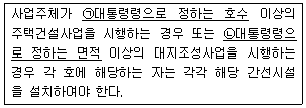
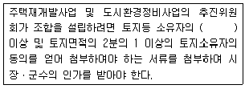
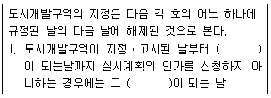

도시계획기사 (2013-09-28 기출문제)
1과목: 도시계획론
1. 다음 중 도시화 현상으로 보기 어려운 것은?
- 2ㆍ3차 산업의 종사자수 증가
- 도시의 주ㆍ야간 인구 격차 감소
- 도시지역의 확대
- 도시지역내 건물의 고층화와 고밀화
(정답률: 78%)

2. 도시공간구조 이론인 Hoyt의 선형이론에서, 선형 형태를 형성하는데 영향을 주는 핵심적인 요인은?
- 가로변 상업지
- 공업단지의 입지
- 고소득층의 주거지역
- 저소득층의 주거지역
(정답률: 69%)
3. 도시조사에 이용되는 회귀분석모형에 대한 설명으로 틀린것은?
- 단순회귀분석이란 하나의 종속변수와 하나의 독립변수 사이의 관계를 추정하는 분석이다.
- 다중회귀분석이란 하나의 종속변수와 여러 개의 독립 변수 사이의 관계를 추정하는 분석이다.
- 회귀계수는 추정하려는 독립변수의 파라메타를 뜻하며, 일반적으로 최소제곱법에 의하여 회귀계수를 추정한다.
- 추정된 회귀선이 표본자료를 얼마나 잘 설명하는가를 나타내는 통계량을 상관계수라고 하며, S2로 표시한다.
(정답률: 81%)
4. 도시의 성격을 설명하는데 있어 인구규모를 기준으로 인간정주사회를 15단계의 공간단위로 분류한 학자는?
- 멈포드(L. Mumford)
- 독시아디스(C. A. Doxiadis)
- 베버(M. Weber)
- 쿠퍼(J. M. Cowper)
(정답률: 88%)
5. 요소모형에 의한 인구 추정에 고려되지 않는 요소는?
- 상주인구
- 사망인구
- 유입ㆍ유출인구
- 출생인구
(정답률: 87%)
6. 도시조사의 목적으로 옳지 않은 것은?
- 도시의 위치와 역할에 대한 이해
- 도시 당면과제의 인식과 해결방안 모색
- 조사 자료의 한시적 활용
- 장래 시가화 동향 예측
(정답률: 84%)
7. 인구 100만 이상 대도시계획에 적합하며, 횡적인 연결은 환상선으로, 도심부와 교외 및 외곽은 방사선으로 연결한 형태로 대표적인 도시로 도쿄, 파리, 모스크바가 해당되는 도로망 형태는?
- 격자형
- 방사형
- 방사환상형
- 대각선 삽입형
(정답률: 85%)
8. 지속가능한 도시가 추구하여야 할 기본 목표가 아닌 것은?
- 환경부하가 높은 첨단도시
- 도시경관의 개선 및 보전
- 환경친화적 교통ㆍ물류체계의 정비
- 쾌적한 도시공간의 정비 및 확보
(정답률: 90%)
9. 도시공간구조 이론 중 다핵심 이론을 주장한 학자는?
- 버제스(E. W. Burgess)
- 매킨지(H. McKenzie)
- 에릭센(E. G. Ericksen)
- 해리스와 울만(C. D. Harris & E. L. Ulman)
(정답률: 77%)
10. 고대 그리스 도시국가에 관한 설명으로 틀린 것은?
- 아테네를 제외한 대부분의 폴리스는 소규모의 성벽에 의해 도시부와 전원부로 구분되는 형태를 취하였다.
- 도시 형태는 원칙적으로 정방형 또는 직사각형이며, 카르도와 데쿠마누스가 격자가로망의 기초이었다.
- 시가지 내에는 아고라(Agora)라는 광장이 있어 정치 및 교역활동과 같은 다양한 용도로 사용되었다.
- 밀레투스, 비잔티움, 시라쿠사, 네아폴리스, 알렉산드리아는 대표적인 그리스의 식민도시다.
(정답률: 72%)
11. 뒤르켐(Durkheim)이 지적한 도시의 아노미 현상(Anomie)에 대한 설명으로 옳은 것은?
- 도시 인구의 증가로 인한 도시 기반시설의 부족현상이다.
- 도시에 대한 적대감을 갖는 것으로, 사회의 도덕적 생활에 대한 위협이라는 관점에서 생겨났다.
- 도시의 기능분화로 인해 발생하는 도시의 물리적 문제다.
- 도시화의 진행에 따라 나타나는 사회병리현상으로, 흔히 대도시화로 인한 인간소외 등의 몰가치상황을 의미한다.
(정답률: 78%)
12. 클라센과 베르그(Klassen & Berg)의 도시권 공간구조 변화단계이론 중, 도시발전의 쇠퇴기로 인구의 분산이 광역화되어 중심부와 교외를 포함한 대도시권 전체의 인구가 감소하는 단계는?
- 도시화
- 교외화
- 역도시화
- 재도시화
(정답률: 74%)
13. 교통계획의 수립에서 교통분석과 예측의 공간단위로서 교통존을 설정하는 방법으로 옳지 않은 것은?
- 각 존은 가급적 동질적인 토지이용을 포함하도록 한다.
- 각 존은 행정구역과 가급적 일치시킨다.
- 각 존의 경계는 간선도로와 일치하도록 한다.
- 각 존의 크기는 도시의 인구규모와 상관없이 동일하게 설정한다.
(정답률: 85%)
14. 1990년대에 미국과 캐나다에서 도시의 무분별한 확산에 의한 도시 문제를 극복하기 위해 제시된 도시개발 패러다임은?
- 낭만주의
- 효용주의
- 뉴어바니즘
- 창조혁신도시
(정답률: 88%)
15. 토지적성평가제도의 도입 배경 및 필요성으로 가장 거리가 먼 것은?
- 농업용 토지의 생산성 증대
- 토지의 난개발 방지
- 종합적 국토관리 틀 구축
- 친환경 국토관리를 위한 계획의 기반 정보 제공
(정답률: 83%)
16. 공동구의 장점에 해당하지 않는 것은?
- 빈번한 노면굴착에 의한 교통 장애를 제거할 수 있다.
- 노상공작물의 철거로 노면의 이용가치가 증대된다.
- 수용하는 도관의 유지관리가 용이하다.
- 기존 가로에 도관의 이설 및 신설이 용이하다.
(정답률: 77%)
17. 바노벳(J. M. Banovetz)이 주장한 도시의 특성으로 옳지 않은 것은?
- 도시는 사회적 공동체다.
- 도시는 법인격을 갖는 사회단위다.
- 도시는 혈연 공동체다.
- 도시는 공공재의 생산단위다.
(정답률: 78%)
18. 토지이용계획 실현수단을 크게 규제수단, 계획수단, 개발수단, 유도수단으로 나눌 때, 다음 중 직접적인 토지이용 '계획수단'에 해당하는 것은?
- 지구단위계획
- 세금 혜택
- 도시재개발사업
- 도시계획시설 정비
(정답률: 66%)
19. 계획이론에 대한 설명 중 옳지 않은 것은?
- 점진적 계획(Incremental Planning)은 지속적인 조정과 적용을 통해 계획의 목표를 ㅈ추구하는 접근 방식을 제시한다.
- 종합적 계획(Synoptic Planning)은 결정론적 모형을 구성하고 계량적 분석방법을 많이 활용하는 특징이 있다.
- 옹호적 계획(Advocacy Planning)은 공익적 차원에서 계획가들로 하여금 국가기관에 대해 빈민들의 요구를 대변하도록 하였다.
- 협력적 계획(Collaborative Planning)은 소수의 전문가 집단들이 상호작용하는 과정이 계획이라고 강조한다.
(정답률: 70%)
20. 도시ㆍ군관리계획도서 중 계획도를 작성하는 지형도의 축척 기준으로 옳은 것은?
- 1/500 또는 1/1000
- 1/1000 또는 1/5000
- 1/5000 또는 1/10000
- 1/25000 또는 1/5000
(정답률: 79%)
2과목: 도시설계 및 단지계획
21. 지구단위계획구역 지정 절차에서 시장 또는 군수가 할수 없는 것은?
- 기초 조사
- 지구단위계획구역의 지정 입안
- 지구단위계획구역의 지정 결정
- 지구단위계획구역 지정안 작성
(정답률: 83%)
22. 개발밀도에 관한 설명으로 옳은 것은?
- 계획의 타당성 여부에 대한 중요한 판단기준이 되며 주거환경의 질을 결정한다.
- 호수말도는 단위면적당 거주인구를 의미한다.
- 통풍, 채광, 일조 등 국지기후와는 관련이 없다.
- 개발 사업자의 수익성을 고려하여 밀도를 결정한다.
(정답률: 66%)
23. 슈퍼블럭(super block)에 대한 설명으로 틀린 것은?
- 블록 내부에 큰 오픈스페이스(open space)를 만들 수 있다.
- 대형가구의 내부에 교통량을 증대시키는 경향이 있다.
- 주거환경의 쾌적성을 높일 수 있다.
- 레드번(Radburn)계획은 슈퍼블럭으로 계획된 것이다.
(정답률: 82%)
24. 단지개발의 기법으로 거리가 먼 것은?
- 기존의 자연지형을 최소한으로 변형시켜 건물을 입지시킨다.
- 기존의 식생을 최대한 보전할 수 있도록 건물을 입지시킨다.
- 건물 사이의 간격은 일조ㆍ채광ㆍ통풍 등을 고려하여 적절한 거리를 유지하도록 한다.
- 태양열의 이용을 최대로 하기 위해 가급적 수목의 배식 비율을 줄인다.
(정답률: 89%)
25. 공동주택의 단위주거구성 형식으로 중앙에 엘리베이터나 계단실을 두고 많은 주호를 집중배치하는 형식으로 부지조건에 따른 설계가 용이하고 설비의 집중화가 가능한 것은?
- 탑상형
- 편복도형
- 단차형
- 일반 단층형
(정답률: 80%)
26. 단독주택의 획지규모를 결정하는 요인이 아닌 것은?
- 모든 계층의 고밀도 주택구입 수요전망에 의한 규모
- 법적 규제 사항
- 건전한 사회구조의 구성을 위해 요구되는 주택규모
- 가구원수와 가구 유형에 따른 쾌적한 주거 수준
(정답률: 88%)
27. 지구단위계획 중 특별계획구역의 지정대상이 아닌 것은?
- 공공사업 시행 이외의 모든 사업에 대하여 지구단위 계획구역의 지정목적을 달성하기 위하여 필요한 경우
- 순차 개발하는 경우 후순위개발 대상지역
- 지구단위계획구역 안의 일정지역에 대하여 우수한 설계안을 반영하기 위하여 현상설계를 하고자 하는 경우
- 하나의 대지 안에 여러 동의 건축물과 다양한 용도를 수용하기 위하여 특별한 건축적 프로그램을 만들어 복합적 개발을 필요로 하는 경우
(정답률: 57%)
28. 도시설계의 의미와 역할에 대한 설명으로 틀린 것은?
- 아름답고 쾌적한 도시환경이 조성되도록 물리적 환경을 구성하는 요소들을 유기적으로 통합되도록 한다.
- 도시건축(Urban Architecture)에서부터 도시의 공간계획을 포괄하는 작업영역을 가진다.
- 직접적으로 도시환경을 조성하기도 하고 간접적으로 도시환경을 조성할 수 있는 근거나 기준을 작성한다.
- 현재 제도로서의 도시설계는 지구단위계획과 상세계획이 있고 이는 제1ㆍ2종지구단위계획과 특별설계구역계획으로 구분한다.
(정답률: 80%)
29. 건축물의 배치와 건축선에 관한 설명으로 옳은 것은?
- 벽면한계선은 가로경관이 연속적인 형태를 유지하거나 구역내 중요 가로변의 건축물을 가지런하게 할 필요가 있는 경우에 사용할 수 있다.
- 건축지정선은 특정지역에서 상점가의 1층 벽면을 가지런하게 하거나 고층부의 벽면의 위치를 지정하는 등 특정층의 벽면의 위치를 규제할 필요가 있는 경우에 지정할 수 있다.
- 벽면지정선은 특정한 층에서 보행공간 등을 확보할 필요가 있는 경우에 사용할 수 있다.
- 건축한계선은 도로에 있는 사람이 개방감을 가질 수 있도록 건축물을 도로에서 일정 거리 후퇴시켜 건축하게 할 필요가 있는 곳에 지정할 수 있다.
(정답률: 80%)
30. 도시설계 기법 중 경험주의적 전통에 입각한 도시설계가로 평가받는 사람은?
- 르 꼬르뷔지에(Le Corbusier)
- 알도 로시(Aldo Rossi)
- 롭 크리에(Rob Krier)
- 고든 쿨렌(Gordon Cullen)
(정답률: 75%)
31. 다음 중 경관분석기법에 해당하지 않는 것은?
- 사진에 의한 방법
- 메쉬(mesh)에 의한 방법
- 기호화 방법
- 군락측도방법
(정답률: 71%)
32. 등고선 간격에 의한 경사분석을 할 때, 2m의 등고선 간격(H)으로 5%의 경사도(G)를 얻으려면 등고선과 등고선 간의 수평거리(D)는 얼마로 하여야 하는가?
- D = 10m
- D = 25m
- D = 40m
- D = 100m
(정답률: 70%)
33. 동일한 주호가 배열된 단독주책지라도 개별 주택의 거주자에 따라 주택의 외부장식, 공간표현 방식이 서로 다르다고 한다. 이러한 거주자의 독특한 공간표현 양식을 무엇이라 하는가?
- 사회적 접촉(Social Contact)
- 개인화(Personalization)
- 의사화(Simulization)
- 군집(Cluster)
(정답률: 79%)
34. 도시의 스카이라인 형성에 직접적인 영향을 미치지 않는 지표는?
- 입면차폐도
- 용적률
- 가구(街區) 크기
- 건축물 높이
(정답률: 56%)
35. 아래 조건에서 상업지역의 면적은?

- 13.0ha
- 14.0ha
- 15.0ha
- 18.0ha
(정답률: 73%)
36. 지구단위계획에서 가로구역별 건축물 최고 높이를 지정하고자 할 때 고려할 사항이 아닌 것은?
- 해당 가로구역의 주차 능력
- 해당 가로구역의 상ㆍ하수도 등 간선시설의 수용 능력
- 해당 가로구역이 접하는 도로의 너비
- 도시미관 및 경관계획
(정답률: 65%)
37. 우리나라에 상세계획제도가 도입된 것에 대한 설명으로 옳은 것은?
- 2000년대 초반에 들어 처음 도입되었다.
- 도시설계제도의 한계를 보완한다는 명분으로 도입되었다.
- 상세계획은 주로 건축물의 규제에 관한 것이다.
- 도시설계제도와 동일한 근거법에 의해 제도화되었다.
(정답률: 64%)
38. 주거단지 내 공동시설 계획 시 고려할 사항으로 틀린 것은?
- 공동시설은 이용성, 기능상의 상관성, 토지이용의 효율성에 따라 인접 배치한다.
- 증축을 고려한 융통성 있는 공간을 확보한다.
- 중심을 형성할 수 있는 곳에 설치한다.
- 이용빈도가 높은 건물은 가급적 이용거리를 멀리한다.
(정답률: 89%)
39. 샹디가르(Chandigarh)에 적용된 공녹지 체계유형은?
- 집중형
- 분산형
- 대상형
- 격자형
(정답률: 78%)
40. 보행자통행이 주이고 차량통행이 부수적인 도로계획기법으로, 1970년 네덜란드 델프트시에서 최초로 등장한 본엘프(Woonerf)가 대표적인 것은?
- 보차공존도로
- 보행전용도로
- 카프리존
- 보차혼용도로
(정답률: 79%)
3과목: 도시개발론
41. 도시화의 단계 중 사람들이 좋은 주거환경과 쾌적성에 대한 관심이 증가됨에 따라, 신시가지 또는 신도시에 대한 개발수요가 높아지며 도심으로의 통근교통 문제와 도시의 평면적 확산이 주요 도시문제가 되는 단계는?
- 도시화 단계(stage of urbanization)
- 교외화 단계(stage of suburbanization)
- 반도시화 단계(stage of deurbanization)
- 재도시화 단계(stage of reurbanization)
(정답률: 77%)
42. 경제성분석에서 가치화 불능효과에 대한 설명으로 옳은 것은?
- 가치화 불능효과는 조건부 가치측정법을 이용하여도 금전적인 가치로 나타낼 수 없다.
- 가치화 불능효과는 구체적인 수치로 나타낼 수는 있으나 효과의 가치를 화폐단위로 나타낼 수 없는 효과다.
- 가치화 불능효과와 시장재 효과를 명확하게 구분하는 기준이 존재하여 경제성 분석에 유용하다.
- 가치화 불능효과의 예로는 재화, 서비스 시장의 변화를 들 수 있다.
(정답률: 71%)
43. 도시개발 여건 분석에 대한 설명으로 틀린 것은?
- 부지의 이용가치를 극대화하기 위해 그 부지의 입지조건을 면밀히 분석할 필요가 있다.
- 입지의 특성은 물리적 요인과 지리적 요인, 법적ㆍ제도적 요인, 경제적 요인 등으로 구분할 수 있다.
- 입지분석은 개발의 컨셉을 사업화하기 위한 일련의 타당성 분석 과정 가운데 가장 먼저 행해지게 된다.
- 물리적 요인을 분석하는 것을 일반분석이라 하고, 지리적 요인, 제도적ㆍ경제적 요인을 분석하는 것을 부지분석이라 한다.
(정답률: 77%)
44. 다음 중 주민참여형 도시개발의 유형이 아닌 것은?
- 주민발의
- 개발협정
- 주민투표
- 공공협약
(정답률: 65%)
45. 도시개발사업의 각 아이템별로 수요가 어느 정도 있는지를 파악하기 위한 정량적 예측모형인 시계열분석(Time Series Analysis) 기법이 아닌 것은?
- 이동평균법
- 지수평활법
- 인과분석법
- 박스젠킨스법
(정답률: 54%)
46. 복합용도개발(MXD)의 사회적ㆍ경제적 효과로 가장 거리가 먼 것은?
- 도시의 외연적 확산 완화
- 수직 통행의 감소를 통한 교통 혼잡 완화
- 직주근접에 따른 통행거리 감소
- 도시개발 리스크의 감소
(정답률: 80%)
47. 개발사업 시행주체에 따른 도시개발방식에 대한 설명으로 가장 거리가 먼 것은?
- 공공개발은 국가나 지방자치단체가 직접 시행하는 도시개발이며, 공사 또는 지방공기업이 시행하는 경우는 공공개발에서 제외된다.
- 합동개발이란 공공이 사업주체가 되고 민간이 자본과 기술을 투입하여 택지를 조성하는 공영개발방식이다.
- 민간개발이란 토지소유자 또는 토지소유자로 구성된 조합, 순수 민간기업 등이 사업시행자가 되는 개발이다.
- 제3섹터개발은 관ㆍ민 양 부문이 공동출자하여 설립된 반관반민의 법인조직이 사업시행자가 되는 개발이다.
(정답률: 78%)
48. 민관합동 부동산개발금융방식인 프로젝트 파이낸싱(project financing)의 자금조달 형태에 관한 설명으로 틀린 것은?
- 자금원 중 자기 자본투자는 투자 회수 순위에서 가장 높은 순위를 지니므로 위험도가 가장 낮다고 할 수 있다.
- 자기 자본투자자는 전략적 투자자와 재무적 투자자로 분류되며 재무적 투자자는 사업에 의한 배당 수익에 투자목적이 있다.
- 자금원 중 선순위 채권(senior debt)은 프로젝트 파이낸싱에서 가장 큰 비중을 차지하는 자금이다.
- 자금원 중 선순위 채권(senior debt)은 대부분 상업은행으로부터의 차입금이 이에 해당되며 이자수익을 목적으로 투자한다.
(정답률: 79%)
49. 마케팅 목표를 이루기 위하여 마케팅 활동에서 사용하는 여러 가지 전략을 종합적으로 균형이 잡히도록 조정ㆍ구성하는 마케팅믹스(4P's Mix)의 4P로 옳은 것은?
- Product, Price, Purpose, Promotion
- Product, Price, Place, Promotion
- Property, Price, Place, Pride
- Property, Price, Purpose, Pride
(정답률: 80%)
50. 지하공간의 개발 배경으로 적절하지 않은 것은?
- 우리나라는 비교적 안정적인 사암으로 지질이 구성되어 있고 암반의 규모 및 면적이 넓어 대규모 지하공간개발에 적합한 자연적 요건을 가지고 있다.
- 급격한 도시화와 수도권 편중에 의한 인구 유입에 따른 개발 가능한 토지 공급의 부족문제를 해결할 수 있다.
- 과도한 집중으로 인해 도시의 기능이 저해되고 있는 현상을 지하공간의 개발을 통해 완화할 수 있다.
- 도시미관을 저해하는 시설 또는 혐오시설을 지하에 배치하여 지상공간을 더욱 쾌적하게 활용할 수 있다.
(정답률: 82%)
51. 건축과 자연의 상호연속을 위해 제안한 필로티의 개념을 더욱 확대하여 도로와는 별도의 공중보랑(pedestrian deck)의 설치를 주장한 곳은?
- Team X
- CIAM
- YB
- WCED
(정답률: 60%)
52. 개발사업의 실행(사업성) 평가를 위해 사용되는 경제적 타당성 분석의 지표가 아닌 것은?
- 순현재가치(NPV)
- B/C 비율
- 내부수익률(IRR)
- 승수효과
(정답률: 82%)
53. 도시개발사업시행의 위탁에 관한 내용으로 옳은 것은?
- 시행자는 도시개발사업을 위한 토지 매수 업무를 국가나 관할지방자치단체에 위탁할 수 없다.
- 시행자가 대통령령으로 정하는 공공시설의 건설 사업에 대한 시행을 위탁할 수 있는 기관에는 한국토지주택공사, 한국철도공사, 한국감정원이 포함된다.
- 시행자는 도시개발사업을 위한 기초조사와 손실보상업무에 한해서는 관할지방자치단체에 위탁할 수 없다.
- 시행자는 대통령령으로 정하는 공공시설의 건설과 공유수면의 매립에 관한 업무를 대통령령으로 정하는 바에 따라 국가, 지방자치단체에 위탁하여 시행할 수 있다.
(정답률: 75%)
54. 다음 내용이 설명하는 것으로 옳은 것은?

- MXD
- TOD
- PUD
- Zoning
(정답률: 89%)
55. 민간이 자금을 투자하여 사회기반시설을 건설하면 정부가 일정 운영기간동안 이를 임차하여 시설을 사용하고 그 대가로 임대료를 지급하는 방식은?
- BTO 방식
- BTL 방식
- BOT 방식
- BOO 방식
(정답률: 72%)
56. 도시개발사업 아이템의 정량적 수요예측의 기법 중 상권에 대한 이론을 가장 체계적으로 정립한 것으로, 개별소매점의 고객흡입력을 계산하는 기법은?
- 델파이법
- 중력모형
- Huff모형
- 판단결정모형
(정답률: 70%)
57. 부동산신탁의 종류 중 임대형 토지신탁과 분양형 토지신탁이 속하는 신탁의 종류는?
- 관리형 신탁
- 운용형 신탁
- 처분형 신탁
- 관리ㆍ처분형 신탁
(정답률: 66%)
58. 부채에 의한 재원조달 방식이 아닌 것은?
- 회사채
- 자산담보부증권
- 투자조합
- 대출
(정답률: 71%)
59. 재개발방식에 따른 재개발 유형에 해당하지 않는 것은?
- 공공시설정비재개발
- 수복재개발
- 전면재개발
- 보존재개발
(정답률: 82%)
60. 「도시 및 주거환경정비법」에서 정의하는 정비사업의 유형이 아닌 것은?
- 주거환경개선사업
- 국민주택건설사업
- 주택재건축사업
- 도시환경정비사업
(정답률: 71%)
4과목: 국토 및 지역계획
61. 프로젝트 A의 실행에 따라 다음과 같이 비용과 편익이 발생한다면 순현재가치(Net Present Value)는? (단, 당해연도부터 편익이 발생하였으며, 할인율은 8%, 단위는 백만원이다.)

- 30.45 백만원
- 40.45 백만원
- 50.45 백만원
- 60.45 백만원
(정답률: 54%)
62. 카스텔(Castells)이 사회구성이론을 통해 도시구조의 발전과정을 설명하고자 도시공간을 경제 부문 측면에서 분류한 4가지의 공간적인 유형이 아닌 것은?
- 여가공간(Leisure Space)
- 생산공간(Production Space)
- 교환공간(Exchange Space)
- 소비공간(Consumption Space)
(정답률: 52%)
63. 다음 중 지역계획의 학문적 성격으로 옳지 않은 것은?
- 종합 과학적이며 학제적인 학문이다.
- 국토 전체에 고나한 총량적인 내용을 다루는 학문이다.
- 규범적이고 실천적인 학문이다.
- 공간적 배분과 형평성에 학문적 패러다임을 둔다.
(정답률: 67%)
64. 국토 전역을 대상으로 하여 국토의 장기적인 발전방향을 제시하는 최상위 국토계획은?
- 시ㆍ군종합계획
- 국토종합계획
- 도종합계획
- 광역개발계획
(정답률: 88%)
65. 도시와 농촌의 구분이 불분명해지고 도시계획과 농촌계획의 통합적 접근이 필요하게 됨에 따라 1932년 도시계획법을 「도시 및 농촌계획법」으로 개정한 나라는?
- 영국
- 미국
- 독일
- 프랑스
(정답률: 87%)
66. 다음의 지역계획 및 지역개발과 관련된 이론이 등장하기 시작한 순서가 빠른 것부터 옳게 나열된 것은?

- 1 → 2 → 3
- 3 → 2 → 1
- 2 → 1 → 3
- 2 → 3 → 1
(정답률: 74%)
67. 수도권정비계획법상 수도권의 과밀을 해소하기 위한 목적으로 시행하는 규제수단으로 옳지 않은 것은?
- 과밀부담금 부과
- 개발제한구역 지정
- 총량규제
- 대규모 개발사업 규제
(정답률: 75%)
68. 다음의 지역발전이론 중 그 성격이 가장 다른 하나는?
- 농촌종합개발전략
- 기초수요전략
- 성장거점이론
- 농정적 개발론
(정답률: 77%)
69. 다음 중 지역(Regions)의 개념적 구성요소로 가장 거리가 먼 것은?
- 국토의 하위 공간단위
- 단위별 면적규모의 통일성
- 지리적 연속성
- 공통적 또는 보완적 특성으로 묶인 기능적 연계성
(정답률: 75%)
70. 우리나라 국토계획의 필요성에 대한 설명으로 가장 거리가 먼 것은?
- 지역격차 완화 및 균형된 지역발전
- 향상된 생활환경의 균등한 공급
- 국토자원이용의 효율성 증대
- 특정지역개발의 유도와 관리
(정답률: 73%)
71. 본 튀넨이 제시한 농업용 토지의 지대이론에서 토지의 지대를 결정하는 요인에 해당하지 않는 것은?
- 거리
- 제품의 단위가격
- 생산단위비용
- 인구 밀도
(정답률: 77%)
72. 레닌(V. I. Lenin, 1993년)이 종속이론에서 주장한 후진국의 자본주의적 발전 특성으로 옳은 것은?
- 선진 자본주의 국가의 자본은 후진국을 지배하지 않는다.
- 선진 자본주의 국가는 후진국에서 경제적 상호주의의 입장을 취한다.
- 선진 자본주의 국가는 후진국에 대한 국제적 독점권을 형성한다.
- 선진 자본주의 국가의 자본은 후진국에서 많은 이윤을 남기고, 이것을 후진국에 재투자한다.
(정답률: 75%)
73. 다음 중 부드빌(O. Boudeville)에 의한 지역 구분에 해당하지 않는 것은?
- 낙후지역(lagging region)
- 계획지역(planning region)
- 분극지역(polarized region)
- 동질지역(homogeneouse area)
(정답률: 82%)
74. A도시는 성장거점도시로 육성되면서 역류효과가 심화되고 있고 이로 인하여 도시의 인구증가속도가 도시산업의 성장속도보다 빠른 현상이 나타나고 있다. A도시를 가장 잘 설명하고 있는 것은?
- 주거환경이 향상된다.
- 가도시화(Pseudo - Urbanization)현상이 나타난다.
- 전체 생산량이 늘어나 살기가 좋아진다.
- 공식부문(Formal Sector)이 늘어난다.
(정답률: 96%)
75. 지역 간 인구이동에 관한 라벤슈타인(E. G. Ravenstein)의 인구이동 법칙에 대한 설명이 옳은 것은?
- 지역 간의 인구이동은 지역 간의 거리에 비례한다.
- 지역 간 인구이동은 농촌에서 근처의 소도시로, 소도시에서 가장 빨리 성장하는 다른 도시로 이동하는 단계적 이동형태를 취한다.
- 도시-농촌 간 인구이동 성향에 있어서 일반적으로 도시출신이 농촌출신보다 높은 이동성향을 지니고 있다.
- 교통수단, 상업과 산업의 발전은 인구이동의 감소를 유도한다.
(정답률: 80%)
76. 다음 중 미국 지역개발계획의 선구적 사례가 된 것은?
- 다모달개발사업
- 테네시계곡개발사업
- 실리콘밸리사업
- 리서치트라이앵글사업
(정답률: 88%)
77. 다음 중 제4차 국토종합계획 수정계획(2006~2020)에서의 국토계획 5대 목표에 따른 전략으로 해당하지 않는 것은?
- 다핵분산형 국토구조 형성 및 지역 특화발전
- 국토의 개발거점 확충 및 상생적 국제협력 선도
- 도시 및 농촌의 정주환경 개선 및 복지 증진
- 국토의 환경친화적 개발 억제 및 아름다운 국토 조성
(정답률: 79%)
78. 허쉬만(Hirschman)이 설명한 적하(trickling down)효과에 대한 내용으로 옳지 않은 것은?
- 소득이 높은 중심도시가 잉여자본을 주변지역에 투자하면 주변지역은 빠르게 성장하게 된다.
- 중심도시가 주변지역에서 농산물을 구입하게 되면 주변지역은 수출의 증대로 성장하게 된다.
- 중심도시는 주변지역의 실업자를 흡수하게 디고 주변지역의 근로자들은 중심도시에서 직업을 구하고 소득을 올릴 수 있게 된다.
- 중심도시가 주변 지역의 경제력을 흡수하여 성장 발전을 하게 되어, 주변 지역의 발전은 둔화된다.
(정답률: 69%)
79. 'Competitive Advantage of Nations'란 저서를 통해 국가경제의 경쟁력은 투입요소 뿐 아니라 사회 전반적인 여건이나 환경에도 크게 영향을 받는다는 산업 클러스터론을 제안한 학자는?
- 마이클 포터(Michael E. Porter)
- 알버트 허쉬만(Albert Hirschman)
- 필립 쿠크(Phillips Cooke)
- 헤리 리차드슨(Herry Richardson)
(정답률: 63%)
80. 퍼로우(F. Perroux)가 제시한 성장극(growth pole)의 특성으로 옳지 않은 것은?
- 성장극은 자체의 성장을 유도하고 성장을 다른 곳으로 확산시킨다.
- 성장극은 경제적 지배력을 가질 수 있을 만큼 충분히 큰 규모를 갖는다.
- 성장극은 다른 산업과의 연계에 있어서 독립성이 강한 특징이 있다.
- 성장극은 전체산업의 평균성장률보다 빠른 성장속도를 갖는다.
(정답률: 83%)
5과목: 도시계획관계법규
81. 도시ㆍ군계획시설의 결정ㆍ구조 및 설치기준에 관한 규칙상 도로의 배치간격 기준이 틀린 것은?
- 주간선도로와 주산선도로 : 2천미터 내외
- 국지도로간(가구의 짧은 변 사이) : 90미터 내지 150미터 내외
- 주간선도로와 보조산건도로 : 500미터 내외
- 보조간선도로와 집산도로 : 250미터 내외
(정답률: 73%)
82. 간선시설의 설치에 관한 아래의 내용에서 ㉠과 ㉡에 해당하는 규모 기준이 모두 옳은 것은?

- ㉠ 100호 ㉡ 16500제곱미터
- ㉠ 100호 ㉡ 33000제곱미터
- ㉠ 200호 ㉡ 16500제곱미터
- ㉠ 200호 ㉡ 33000제곱미터
(정답률: 56%)
83. 다음 중 산업단지개발사업의 시행자가 될 수 없는 자는?
- 중소기업진흥에 관한 법률에 따른 중소기업진흥공단
- 산업단지 안의 토지의 소유자 또는 그들이 산업단지 개발을 위하여 설립한 조합
- 해당 산업단지개발계획에 적합한 시설을 설치하여 입주하려는 자와 산업단지개발에 관한 자문계약을 체결한 부동산투자자문회사
- 산업집적활성화 및 공장설립에 관한 법률의 규정에 따라 설립된 한국산업단지공단
(정답률: 64%)
84. 택지개발사업 실시계획의 작성 및 승인에서 지정권자의 승인을 받지 않아도 되는 대통령령으로 정하는 경미한 사항의 변경에 해당하지 않는 것은?
- 사업비의 100분의 10의 범위에서의 사업비의 증감
- 사업면적의 100분의 10의 범위에서의 면적의 감소
- 3000m2 미만인 공공시설의 위치 및 면적 변경
- 승인을 얻은 사업비의 범위에서의 설비 및 시설의 설치 변경
(정답률: 56%)
85. 수도권의 권역 구분과 지정에 관한 설명이 틀린 것은?
- 과밀억제권역, 성장관리권역 및 자연보전권역의 범위는 국토교통부령으로 정한다.
- 과밀억제권역은 인구와 산업이 지나치게 집중되었거나 집중될 우려가 있어 이전하거나 정비할 필요가 있는 지역을 말한다.
- 성장관리권역은 과밀억제권역으로부터 이전하는 인구와 산업을 계획적으로 유치하고 산업의 입지와 도시의 개발을 적정하게 관리할 필요가 있는 지역을 말한다.
- 자연보전권역은 한강 수계의 수질과 녹지 등 자연환경을 보전할 필요가 있는 지역을 말한다.
(정답률: 66%)
86. 도시개발채권에 대한 설명으로 틀린 것은?
- 지방자치단체의 장은 도시개발사업 또는 도시ㆍ군계획 시설사업에 필요한 자금을 조달하기 위하여 도시개발채권을 발행할 수 있다.
- 도시개발채권의 소멸시효는 상환일부터 기산하여 원금은 2년, 이자는 5년으로 한다.
- 시ㆍ도지사가 도시개발채권을 발행하려는 경우 안전행정부장관의 승인을 받아야 하는 사항이 있다.
- 도시개발채권의 상환은 5년부터 10년까지의 범위에서 지방자치단체의 조례로 정한다.
(정답률: 59%)
87. 관광진흥법상 특별자치도지사ㆍ시장ㆍ군수ㆍ구청장이 관할구역 내 관광특구를 방문하는 외국인 관광객의 유치촉진 등을 위하여 수립하고 시행하는 계획은?
- 관광권역계획
- 관광기본계획
- 관광특구진흥계획
- 관광활성화계획
(정답률: 76%)
88. 국토기본법상 다른 법률에서 다른 위원회의 심의를 거치도록 하여 국토정책위원회의 심의를 거치지 아니하는 사항은?
- 부문별계획에 관한 사항
- 도종합계획에 관한 사항
- 국토계획평가에 관한 사항
- 국토종합계획에 관한 사항
(정답률: 48%)
89. 도시 및 주거환경정비법상 조합의 설립인가에 관한 아래 내용 중 ( )안에 들어갈 내용이 옳은 것은?

- 2분의 1
- 3분의 2
- 4분의 3
- 5분의 4
(정답률: 28%)
90. 다음 중 도시공원의 종류에 해당하지 않는 것은?
- 근린공원
- 묘지공원
- 체육공원
- 국립공원
(정답률: 72%)
91. 택지개발촉진법령상 택지의 공급에 관한 설명이 틀린 것은?
- 시행자는 그가 개발한 택지를 국민주택규모의 주택건설용지와 기타의 주택건설용지 및 법의 관련 조항에 따른 공공시설용지로 구분하여 공급한다.
- 주택법에 의한 사업주체 중 국가, 지방자치단체 또는 국토교통부령이 정하는 공공기관에 공급할 경우 수의계약의 방법으로 택지를 공급할 수 있다.
- 시행자는 공공시설용지를 제외하고는 국민주택규모의 주택건설용지로 택지를 우선 공급하여야 한다.
- 판매시설용지 등 영리를 목적으로 사용될 택지는 공개 추첨에 의하여 공급한다.
(정답률: 71%)
92. 도시개발구역지정의 해제에 관한 아래의 내용에서 ( )안에 공통으로 들어갈 내용으로 옳은 것은?

- 2년
- 3년
- 5년
- 7년
(정답률: 64%)
93. 국토기본법에 따른 환경친화적 국토관리의 내용으로 거리가 먼 것은?
- 국토에 관한 계획 또는 사업을 수립ㆍ진행할 때에는 자연환경과 생활환경에 미치는 영향을 사전에 고려하여야 하며, 환경에 미치는 부정적인 영향이 최소화될 수 있도록 하여야 한다.
- 국토의 무질서한 개발을 방지하고 국민 생활에 필요한 토지를 원활하게 공급하기 위하여 토지이용에 관한 종합적인 계획을 수립하고 이에 따라 국토 공간을 체계적으로 관리하여야 한다.
- 지역 간 경쟁을 통하여 국민생활의 질적 향상을 도모 하고 국토의 지리적 특성을 살려 국가 경쟁력을 강화할 수 있는 기간시설을 설치하여야 한다.
- 자연생태계를 통합적으로 관리ㆍ보전하고 훼손된 자연생태계를 복원하기 위한 종합적인 시책을 추진하여 인간이 자연과 더불어 살 수 있는 쾌적한 국토 환경을 조성하여야 한다.
(정답률: 86%)
94. 수도권 정비계획법상의 인구집중유발시설 기준이 틀린 것은?
- 고등교육법 규정에 따른 산업대학 또는 전문대학
- 산업집적활성화 및 공장설비에 관한 법률의 규정에 따른 공장으로서 건축물의 연면적이 500m2 이상인 것
- 중앙행정기관 및 그 소속기관의 청사로서 건축물의 연면적이 500m2 이상인 것
- 업무용시설이 주용도인 건축물로서 그 연면적이 25000m2 이상인 건축물
(정답률: 59%)
95. 건축법상 지하층이란 건축물의 바닥이 지표면 아래에 있는 층으로 바닥에서 지표면까지 평균 높이가 해당 층 높이의 얼마 이상인 것을 말하는가?
- 2분의 1
- 3분의 1
- 4분의 1
- 5분의 1
(정답률: 78%)
96. 주택법에 따른 용어의 정의가 틀린 것은?
- 공동주택이란 건축물의 벽ㆍ복도ㆍ계단이나 그 밖의 설비 등의 전부 또는 일부를 공동으로 사용하는 각 세대가 하나의 건축물 안에서 각각 독립된 주거생활을 할 수 있는 구조로 된 주택을 말한다.
- 국민주택이란 국민주택기금으로부터 자금을 지원받아 건설되거나 개량되는 주택으로서 주거전용면적이 1호 또는 1세대당 85제곱미터 이하인 주택을 말한다.
- 도시형 생활주택이란 150세대 미만의 국민주택규모에 해당하는 주택으로서 단지형 다세대주택, 원룸형 주택, 기숙사형 주택을 말한다.
- 에너지절약형 친환경주택이란 저에너지 건물 조성기술 등 대통령령으로 정하는 기술을 이용하여 에너지 사용량을 절감하거나 이산화탄소 배출량을 저감할 수 있도록 건설된 주택을 말한다.
(정답률: 78%)
97. 수도권정비계획법령에 따른 다음 내용 중 틀린 것은?
- 국토교통부장관은 인구집중유발시설에 대하여 신설 또는 증설의 총허용량을 정하여 이를 초과하는 신설 또는 증설을 제한할 수 있다.
- 도시 및 주거환경정비법에 따른 도시환경정비사업의 건축하는 건축물에는 과밀부담금의 100분의 50을 감면 한다.
- 과밀부담금 산정시 건축비는 국토교통부장관이 고시하는 표준건축비를 기준으로 산정한다.
- 징수된 부담금의 100분의 50은 부담금을 징수한 건축물이 있는 구에 귀속한다.
(정답률: 43%)
98. 교통광장에 대한 설명이 틀린 것은?
- 교통광장은 교차점광장, 역전광장 및 주요시설광장으로 구분한다.
- 교차점광장은 혼잡한 주요도로의 교차지점에서 각종 차량과 보행자를 원활히 소통시키기 위하여 필요한 고에 설치한다.
- 역전광장은 대중교통수단 및 주차시설과 원활히 연계되도록 설치한다.
- 주요시설광장에는 주민의 집회ㆍ행사 또는 휴식을 위한 시설과 보행자의 통행에 지장이 없는 시설을 설치한다.
(정답률: 71%)
99. 주차장법령상 단지조성사업등으로 설치되는 노외주차장에 경형자동차를 위한 전용주차구획을 노외주차장 총 주차대수의 얼마 이상 설치하여야 하는가?(관련 규정 개정전 문제로 여기서는 기존 정답인 2번을 누르면 정답 처리됩니다. 자세한 내용은 해설을 참고하세요.)
- 3%
- 5%
- 10%
- 15%
(정답률: 58%)
100. 주차장법 시행규칙상 노외주차장에 설치할 수 있는 부대시설에 해당하지 않는 것은? (단, 시ㆍ군 또는 구의 조례로 정하는 이용자 편의시설은 고려하지 않는다.)
- 관리사무소
- 자동차 관련 수리시설 및 장식품 판매점
- 노외주차장의 관리ㆍ운영상 필요한 편의시설
- 공중화장실
(정답률: 80%)